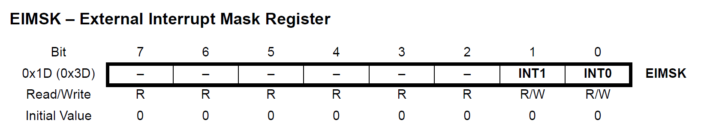
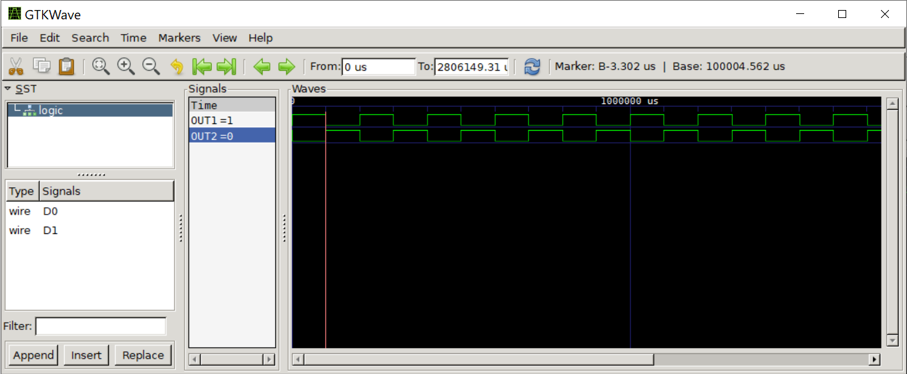

การเขียนโปรแกรมภาษา C สำหรับ AVR (ATmega328P): ตอนที่ 2#
Keywords: Atmel AVR MCU, ATmega328P, Bare-metal C Programming, AVR-GCC, avr-libc
- การเขียนโปรแกรมภาษา C แบบ Bare-Metal และการใช้ไลบรารี avr-libc
- โค้ดตัวอย่างที่ 1: Output Toggle
- โค้ดตัวอย่างที่ 2: Polling-based I/O Follower
- โค้ดตัวอย่างที่ 3: External Interrupt
- โค้ดตัวอย่างที่ 4: Interrupt-based I/O Follower
- โค้ดตัวอย่างที่ 5: Signal Copy with Inverting Output
- โค้ดตัวอย่างที่ 6: Pin Change Interrupt
▷ การเขียนโปรแกรมภาษา C แบบ Bare-Metal และการใช้ไลบรารี avr-libc#
จากบทความใน ตอนที่ 1 ซึ่งกล่าวถึง ไมโครคอนโทรลเลอร์ขนาด 8 บิต ที่มีสถาปัตยกรรมและชุดคำสั่งแบบ AVR และได้เลือกใช้ชิป ATmega328P นำมาใช้ในการทดลองเขียนโค้ดภาษา C มีซอฟต์แวร์ประเภท IDE ให้เลือกใช้งานได้ เช่น
- Arduino IDE
- Microchip Studio IDE
- MPLAB-X IDE
- AUTODESK TinkerCAD - Circuits (Cloud-based)
- Wokwi AVR Simulator (Cloud-based, Open Source)
ในบทความตอนที่ 2 นี้ เราจะใช้ Wokwi AVR Simulator ในการเขียนโค้ดและจำลองการทำงานหรือดีบักโค้ดสำหรับ ATmega328P
รูปแบบการเขียนโค้ดเป็นแบบ Bare-Metal C Programming กล่าวคือ ไม่ได้เรียกใช้คำสั่งหรือฟังก์ชันในระดับสูงจากไลบรารี อย่างไรก็ตาม AVR-GCC Toolchain ก็มาพร้อมกับไลบรารีภาษา C ที่มีชื่อว่า avr-libc ก็มีคำสั่งหรือฟังก์ชันพื้นฐานที่นำมาใช้ได้สำหรับการเขียนโค้ด แม้ว่าจะมีคำสั่งน้อยกว่ากรณีที่เขียนโปรแกรมด้วย Arduino C/C++ API
การเขียนโปรแกรมเพื่อกำหนดรูปแบบฟังก์ชันหรือควบคุมการทำงานของวงจรภายในของไมโครคอนโทรลเลอร์ จะอาศัยวิธีการเข้าถึงรีจิสเตอร์ (Registers) ของไมโครคอนโทรลเลอร์ที่ได้เลือกมาใช้งาน ซึ่งโดยทั่วไปแล้วจะต้องเข้าถึงผ่านพอยน์เตอร์ที่ชี้ไปยังแอดเดรสของรีจิสเตอร์เหล่านั้น
แต่เพื่อให้ง่ายต่อการใช้งาน จึงได้มีการกำหนดชื่อของรีจิสเตอร์เป็นให้สัญลักษณ์ หรือเรียกว่า "แมโครในภาษาซี" (C Macros) ซึ่งตรงกับรายละเอียดในเอกสาร Datasheet ของผู้ผลิต (แนะนำให้ผู้อ่านได้ศึกษาข้อมูลและรายละเอียดจากไฟล์เอกสารดังกล่าวร่วมด้วย)
โดยทั่วไป การเขียนโค้ดภาษา C สำหรับ AVR จะต้องใช้ไฟล์
<avr/io.h>
ซึ่งเป็นไฟล์ประเภท C Header File ของไลบรารี avr-libc
ในไฟล์นี้จะมีการประกาศใช้แมโครสำหรับค่าคงที่ต่าง ๆ ชื่อของรีจิสเตอร์ภายในไมโครคอนโทรลเลอร์ เป็นต้น
ถ้าชิปเป้าหมายคือ ATmega328P ไฟล์ <avr/io.h> จะนำไปสู่ไฟล์
<avr/iom328p.h>
รูปแบบการกำหนดสัญลักษณ์ต่าง ๆ ดูได้จากไฟล์
<avr/iom328p.h> ของ AVR-libc สำหรับชิป ATmega328P
และไฟล์นี้จะถูกนำเข้าโดยอัตโนมัติจากไฟล์ <avr/io.h>)
รูป: Atmel ATmega328P Datasheet (.pdf) (คลิกที่รูปเพิ่มเปิดดูไฟล์ .pdf)
รูป: ตัวอย่างเนื้อหาภายในบางส่วนของไฟล์ <avr/iom328p.h>
จากรูปจะเห็นได้ว่า มีการประกาศสัญลักษณ์ที่มีชื่อว่า PINB, DDRB และ PORTB
ด้วยคำสั่ง #define และเกี่ยวข้องกับรีจิสเตอร์สำหรับพอร์ต PORTB ของ ATmega328P
อยู่ที่แอดเดรสสำหรับ I/O หมายเลข 0x03, 0x04 และ 0x05 ตามลำดับ
(บวกกับค่า Address Offset อีก 0x20)
การเขียนหรืออ่านค่าสำหรับ PINB, DDRB และ PORTB ก็ทำได้เหมือนกับตัวแปรทั่วไปที่มีขนาดข้อมูล 8 บิต
รูป: แสดงผังวงจรดิจิทัลสำหรับ I/O Block ภายในชิป AVR MCU
หนึ่งพอร์ต (I/O Port) จะมีขา I/O Pin ที่เกี่ยวข้องหรือจัดรวมเป็นกลุ่มเดียวกัน สูงสุด 8 ขา และมีการตั้งชื่อพอร์ตเป็น A, B, C และ D เป็นต้น โดยส่วนใหญ่แล้วจะใช้งานเป็นขาดิจิทัล หรือที่เรียกว่า General-Purpose I/O (GPIO) บางขาอาจถูกตั้งค่าฟังก์ชันการทำงานให้เป็นแบบอื่นได้ เช่น เป็นขาอินพุตสำหรับสัญญาณแอนะล็อก เป็นต้น
ในกรณีที่เป็นขาดิจิทัล ก็จะมีทิศทางของสัญญาณให้เลือกว่า จะเป็นอินพุตหรือเป็นเอาต์พุต ซึ่งฟังก์ขันการทำงานของขา I/O แบบดิจิทัล สามารถโปรแกรมได้ผ่านทางริจีสเตอร์ที่เกี่ยวข้อง
รูป: ตารางแสดงค่าบิตที่เกี่ยวข้องกับการกำหนดรูปแบบการใช้งานของขา I/O ของพอร์ต เช่น การกำหนดทิศทางของขาให้เป็นอินพุตหรือเอาต์พุต การเปิดหรือปิดการทำงานของวงจรตัวต้านทานภายในแบบ Pullup เป็นต้น
จากตาราง สัญลักษณ์ x หมายถึง พอร์ต และ n หมายถึง บิต เช่น PORTB5 หมายถึง
บิตที่ 5 ในริจิสเตอร์ PORTB ของพอร์ต B (ซึ่งตรงกับการทำงานของขา GPIO PB5)
รูป: ตารางแสดงรีจิสเตอร์ DDRBขนาด 8 บิต สำหรับพอร์ต B
รูป: ตารางแสดงรีจิสเตอร์ PORTBขนาด 8 บิต สำหรับพอร์ต B
รูป: ตารางแสดงรีจิสเตอร์ PINBขนาด 8 บิต สำหรับพอร์ต B
รูป: ตารางแสดงรีจิสเตอร์ MCUCR ที่มีบิต PUD สำหรับการเปิดหรือปิดฟังก์ชัน
การใช้งาน Pullup ที่ขา I/O Pins ของทุกพอร์ต
ถ้าต้องการให้ขา I/O ในตำแหน่งบิตที่ 5 ของพอร์ต B เป็นขาเอาต์พุต-ดิจิทัล
จะต้องทำให้ทำให้บิตที่ 5 ของรีจิสเตอร์ DDRB (Data Direction Register for PORTB) หรือ
ให้บิต DDB5 ของรีจิสเตอร์ดังกล่าว มีค่าเป็น 1
เมื่อกำหนดให้ขาใดเป็นเอาต์พุตแล้ว เช่น ที่ขา PB5 และจะทำให้ขาดังกล่าวมีสถานะเป็นลอจิก High หรือ Low
ก็ใช้วิธีการเซตบิตที่ 5 ของ PORTB ให้เป็น 1 หรือเคลียร์บิตดังกล่าว ให้เป็น 0 ตามลำดับ
หากต้องการสลับสถานะลอจิก (Pin Toggle) ที่ขาเอาต์พุต เช่น PB5 ก็สามารถทำได้ง่าย โดยการเขียน 1 ไปยัง
บิตที่ 5 ของรีจิสเตอร์ PINB
รูป: Pin Toggle อ้างอิงจาก Datasheet
แต่หากจะใช้ขา PB5 เป็นขาอินพุต และต้องการเปิดใช้งาน Pullup ซึ่งเป็นตัวต้านทานภายในที่ขาดังกล่าว
จะต้องทำให้บิตที่ 5 ของรีจิสเตอร์ DDRB (หมายถึง บิต DDB5) มีค่าเป็น 0 และให้บิตที่ 5 ของรีจิสเตอร์ PORTB
(หมายถึงบิต PORTB5) เป็น 1
นอกจากนั้น ยังต้องดูอีกว่า บิต PUD (Pull-up Disabled Bit) ของรีจิสเตอร์ MCUCR
(MCU Control Register) ต้องมีค่าเป็น 0
เมื่อกำหนดให้ขาใดเป็นอินพุตแล้ว เช่น ที่ขา PB5 และต้องการอ่านค่าอินพุต ก็อ่านค่าของบิตที่ 5 ของรีจิสเตอร์ PINB
หากใช้บอร์ด Arduino ที่มีชิป ATmega328P เป็นตัวประมวผล เช่น บอร์ด Arduino Uno หรือ Arduino Nano ก็ควรจะทราบตำแหน่งของขาต่าง ๆ และความเชื่อมโยงระหว่าง Arduino Pins กับ MCU Pins ตามรูปต่อไปนี้ ยกตัวอย่าง เช่น Arduino D5 pin ก็คือ PD5 Pin
รูป: ATmega328P - Arduino Pinmap (Source: Arduino.cc)
▷ โค้ดตัวอย่างที่ 1: Output Toggle#
ตัวอย่างโค้ดแรกนี้ สาธิตการเขียนค่าลงในรีจิสเตอร์สำหรับ Arduino D5 pin และตรงกับขา PD5 ของ ATmega328p
การเขียนค่าจะทำให้ขาดังกล่าวเป็นเอาต์พุต และมีค่าเป็น 1 และ 0 สลับกันไป โดยเว้นระยะเวลาประมาณ 500 มิลลิวินาที (0.5 วินาที)
โดยใช้คำสั่ง _delay_ms() ของไลบรารี avr-libc
หากขาดังกล่าวต่อกับวงจร LED ภายนอก ก็จะเห็นการกระพริบของแสงไฟเกิดขึ้น
#define F_CPU 16000000UL // set the CPU speed to 16MHz
#include <avr/io.h> // for PORTx, DDRx, ... I/O registers
#include <util/delay.h> // for _delay_ms();
int main(){
// set direction of PD5 pin to output
DDRD |= (1<<5); // set DDD5 bit
while(1) {
PORTD |= (1<<5); // output high to PD5 (set bit)
_delay_ms(500);
PORTD &= ~(1<<5); // output low to PD5 (clear bit)
_delay_ms(500);
}
}
รูป: การจำลองการทำงานของโค้ดตัวอย่างสำหรับบอร์ด Arduino Nano โดยใช้ซอฟต์แวร์ Wokwi AVR Simulator
ในเชิงเปรียบเทียบ การสลับสถานะของเอาต์พุตที่ขา PD5 ก็สามารถใช้วิธีการเขียนค่าบิต 1 ลงในรีจิสเตอร์ PIND
ในตำแหน่งบิตที่ 5 ได้เช่นกัน
#define F_CPU 16000000UL // set the CPU speed to 16MHz
#include <avr/io.h> // for PORTx, DDRx, ... I/O registers
#include <util/delay.h> // for _delay_ms();
int main(){
// set direction of PD5 pin to output
DDRD |= (1<<5); // set DDD5 bit
while(1) {
PIND = (1<<5); // toggle output at PD5 pin
_delay_ms(500);
}
}
▷ โค้ดตัวอย่างที่ 2: Polling-based I/O Follower#
ตัวอย่างนี้สาธิตการเขียนโค้ดเพื่อให้ขา PD2 เป็นอินพุตและเปิดใช้งานตัวต้านทาน Pullup ที่ขาดังกล่าว และใช้ขา PD5 สำหรับเอาต์พุต สถานะของเอาต์พุตจะถูกอัปเดตตามค่าของอินพุตที่ขา PD2 ที่อ่านได้ในขณะนั้น ดังนั้นจึงทำงานในลักษณะที่เรียกว่า I/O Follower
#define F_CPU 16000000UL // set the CPU speed to 16MHz
#include <avr/io.h> // for PORTx, DDRx, ... I/O registers
#include <util/delay.h> // for _delay_ms();
#define OUT_MASK _BV(5) // (1<<5)
#define IN_MASK _BV(2) // (1<<2)
int main(){
// set direction of PD5 pin to output
DDRD |= OUT_MASK; // set DDD5 bit
// set direction of PD2 pin to input with pullup
MCUCR &= ~(1<<PUD); // clear PUD bit
DDRD &= ~IN_MASK; // clear DDD2 bit (PD2 input direction)
PORTD |= IN_MASK; // enable internal pull-up on PD2 pin
// I/O follower
while(1) {
if (PIND & IN_MASK) { // input high
PORTD |= OUT_MASK; // set bit of PORTD5
} else { // input low
PORTD &= ~OUT_MASK; // clear bit of PORTD5
}
}
}
การรับค่าจากอินพุตที่ขา PD2 จะได้จากการต่อวงจรปุ่มกดภายนอก (ทำงานแบบ Active-Low) หากไม่มีการกดปุ่มค้างไว้ จะได้สถานะอินพุตเป็น High และที่ขาดังกล่าว ระดับแรงดันไฟฟ้าจะถูกดึงขึ้นผ่านตัวต้านทานภายในแบบ Pullup ให้มีสถานะลอจิกเป็น High แต่ถ้ากดปุ่มค้างไว้ จะถูดดึงลงมาโดยการทำงานของปุ่มกด ทำให้เชื่อมต่อกับ GND ของระบบ และได้สถานะเป็น Low
จากการจำลองการทำงาน เมื่อกดปุ่ม จะทำให้ LED ดับลง (OFF) แต่ถ้าปล่อยปุ่ม จะทำให้ LED อยู่ในสถานะ ON
รูป: การจำลองการทำงานของโค้ดตัวอย่างที่ 2
ข้อสังเกต: ในการจำลองการทำงานของปุ่มโดยใช้ Wokwi Simulator ได้กำหนดให้ "attrs": {"bounce":"0"}
ในไฟล์ diagram.json เพื่อป้องกันการกระเด้งของปุ่มกด (No button bouncing)
หากต้องการศึกษาพฤติกรรมการทำงานของโค้ด ด้วยวิธีการจำลองการทำงาน เช่น การเปลี่ยนแปลงในเชิงเวลาที่ขา I/O ของไมโครคอนโทรลเลอร์ ก็สามารถใช้ Virtual Logic Analyzer มาต่อเพิ่มได้ และวัดสัญญาณที่ขา PD2 (Button)
และ PD5 (LED) ตามลำดับ เมื่อจำลองการทำงานแล้วจะได้ไฟล์ .vcd แล้วนำไปเปิดในโปรแกรม เช่น GTKWave
เพื่อแสดงรูปคลื่นสัญญาณ และวิเคราะห์การเปลี่ยนแปลงของสัญญาณที่เกิดขึ้น
มาลองดูตัวอย่างการจำลองการทำงานดังต่อไปนี้
รูป: การจำลองการทำงาน และมี Virtual Logic Analyzer
รูป: รูปคลื่นสัญญาณที่ได้จากการจำลองการทำงาน และมีการกดปุ่มหลาย ๆ ครั้ง
รูป: ใช้เคอร์เซอร์ (Cursors) ในแนวตั้ง เพื่อวัดระยะห่างระหว่างสองเหตุการณ์ที่เกิดขึ้น เช่น ถ้ามีการเปลี่ยนแปลงที่ขาอินพุต แล้วจะเกิดการเปลี่ยนแปลงที่ขาเอาต์พุตตามมา จากรูปตัวอย่างใช้เวลา 0.438 usec
▷ โค้ดตัวอย่างที่ 3: External Interrupt#
ถัดไปมาลองเรียนรู้เกี่ยวกับอินเทอร์รัพท์ (Interrupt) ของไมโครคอนโทรลเลอร์ ซึ่งก็คือ การขัดจังหวะการคำสั่งของซีพียู เมื่อเกิดอินเทอร์รัพท์ ซีพียูจะหยุดการทำคำสั่งในขณะนั้น แล้วไปตอบสนองต่อเหตุการณ์อินเทอร์รัพท์ที่เกิดขึ้น โดยทำคำสั่งต่าง ๆ ในฟังก์ชันที่เรียกว่า ISR (Interrupt Service Routine) สำหรับเหตุการณ์ที่เกี่ยวข้อง เมื่อทำเสร็จแล้ว ก็กลับไปทำคำสั่งต่อจากเดิมที่หยุดค้างไว้
อินเทอร์รัพท์ที่เกิดขึ้นในระบบมีหลายกรณี หรือ มาจากแหล่งที่มาแตกต่างกัน เรียกว่า Interrupt Sources เช่น เกิดจากวงจรภายในของไมโครคอนโทรลเลอร์ก็ได้ หรือเกิดจากเหตุการณ์ภายนอกที่ขา GPIO (เรียกว่า External Interrupt Request) หรือ การกดปุ่มรีเซตของบอร์ด เป็นต้น การกดปุ่มรีเซตจะทำให้เกิด Reset Interrupt ซึ่งจะทำให้ซีพียู เริ่มต้นทำงานให้จากแอดเดรส 0x0000 เป็นต้น
รูป: ตาราง Interrupt Vector Table ของ ATmega328P
ขา GPIO ของ AVR สามารถสร้างสัญญาณอินเทอร์รัพท์ได้ เมื่อเปิดใช้งานและได้กำหนดเงื่อนไขสำหรับตรวจสอบเหตุการณ์จากภายนอก (External Interrupt) ที่เกิดขึ้นกับขาดังกล่าว เงื่อนไขแบบนี้เรียกว่า Trigger Type (แบ่งเป็นสองประเภท คือ Level Type และ Edge Type) แต่สำหรับชิป ATmega328P แล้ว จะใช้อินเทอร์รัพท์ภายนอกได้เพียง 2 ช่อง คือ INT0 และ INT1 ตามลำดับ
นอกจาก External Interrupts แล้วยังมี Pin Change Interrupts (PCINTx) ที่สามารถใช้ตรวจสอบการเปลี่ยนแปลงสถานะลอจิกที่ขาอินพุตได้ แต่เป็นการแชร์ใช้งานร่วมกันหลายขา (8 ขา ต่อหนึ่งอินเทอร์รัพท์) ซึ่งแตกต่างจากกรณีของ External Interrrupts ที่มีอินเทอร์รีพท์ต่อหนึ่งขาสัญญาณแยกกัน
รูป: ตารางรีจิสเตอร์ EICRA (External Interrupt Control Register A)

รูป: ตารางรีจิสเตอร์ EIMSK (External Interrupt Mask Register)
รูป: ตารางรีจิสเตอร์ EIFR (External Interrupt Flag Register)
หลังจากได้เปิดใช้งานอินเทอร์รัพท์ภายนอกแล้ว บิต Interrupt Flag (บิต INTF0 และ INTF1
ในรีจิสเตอร์ EIFR สำหรับอินเทอร์รัพท์หมายเลข INT0 และ INT1 ตามลำดับ)
จะได้ค่าลอจิกเป็น 1 เมื่อเกิดอินเทอร์รัพท์ในแต่ละครั้ง
หากมีการเปิดใช้งานอินเทอร์รัพท์ของระบบ (Global Interrupt) ซึ่งหมายถึง บิต I ในรีจิสเตอร์ SREG
จะต้องเป็น 1 ก็จะทำให้ซีพียูกระโดดไปทำคำสั่งที่อยูในตำแหน่งที่เรียกว่า Interrupt Vector สำหรับอินเทอร์รัพท์ภายนอก
และเรียกฟังก์ชันที่ทำหน้าที่เป็น ISR (Interrupt Service Routine) ให้ทำงาน
บิต Interrupt Flag จะถูกเคลียร์โดยอัตโนมัติเมื่อจบการทำงานของฟังก์ชัน แต่หากต้องการเคลียร์บิตนี้เอง ให้เขียนค่าลอจิก 1 สำหรับบิตดังกล่าว
ตัวอย่างนี้สาธิตการใช้งานอินเทอร์รัพท์ภายนอก INT0 ซึ่งตรงกับขา PD2 ของ ATmega328p
และกำหนดเงื่อนไขในการเกิดอินเทอร์รัพท์ ให้เป็นขอบขาลง (Falling) ดังนั้นจะต้องกำหนดค่าบิตสำหรับ
ISC01 และ ISC00 ในรีจิสเตอร์ EICRA (External Interrupt
Control Register A) และกำหนดค่าบิต INT0 ในรีจิสเตอร์
EIMSK (External Interrupt Mask Register) ให้ถูกต้อง
เมื่อมีการกดปุ่มแล้วทำให้อินพุตที่ขา PD2 เปลี่ยนจาก High เป็น Low จะเกิดเหตุการณ์ที่เรียกว่า
Falling Edge หรือขอบขาลง ดังนั้นจะทำให้เกิดอินเทอร์รัพท์ INT0 แล้วเรียกฟังก์ชัน ISR(INT0_vect)
ให้ทำงานโดยอัตโนมัติ ซึ่งจะทำให้มีการเปลี่ยนสถานะลอจิกที่ขาเอาต์พุตที่ขา PD5 หนึ่งครั้ง
#define F_CPU 16000000UL // set the CPU speed to 16MHz
#include <avr/io.h> // for PORTx, DDRx, ... I/O registers
#include <util/delay.h> // for _delay_ms();
#include <avr/interrupt.h> // for ISR(...)
#define OUT_MASK _BV(5) // (1<<5)
#define IN_MASK _BV(2) // (1<<2)
ISR (INT0_vect) { // ISR for INT0 interrupt
PIND |= OUT_MASK; // toggle PD2 pin
}
int main(){
// set direction of PD5 pin to output
DDRD |= OUT_MASK; // set bit
// set direction of PD2 pin to input with pullup
MCUCR &= ~(1<<PUD); // clear PUD bit
DDRD &= ~IN_MASK; // clear DDD2 bit (PD2 input direction)
PORTD |= IN_MASK; // enable internal pull-up on PD2 pin
// enable external interrupt INT0 (trigger type: falling edge)
EICRA |= _BV(ISC01); // set ISC01 bit
EICRA &= ~_BV(ISC00); // clear ISC00 bit
EIMSK |= _BV(INT0); // enable INT0
sei(); // enable global interrupt (set I-bit of SREG)
while(1);
}
▷ โค้ดตัวอย่างที่ 4: Interrupt-based I/O Follower#
ตัวอย่างนี้คล้ายกับตัวอย่างที่ 2 แต่เปลี่ยนมาใช้วิธีการเปิดอินเทอร์รัพท์ภายนอก ที่จะเกิดขึ้นเมื่อมีการเปลี่ยนแปลงระดับของอินพุตที่ขา PD2 ทั้งขอบขาขึ้นและขาลง (Any Change / Both Edges) และฟังก์ชัน ISR จะตรวจสอบอินพุตที่ขา PD2 ในขณะนั้น แล้วจะทำให้เอาต์พุตที่ขา PD5 เปลี่ยนแปลงตามค่าของอินพุต
#define F_CPU 16000000UL // set the CPU speed to 16MHz
#include <avr/io.h> // for PORTx, DDRx, ... I/O registers
#include <util/delay.h> // for _delay_ms();
#include <avr/interrupt.h> // for ISR(...)
#define OUT_MASK _BV(5) // (1<<5)
#define IN_MASK _BV(2) // (1<<2)
ISR (INT0_vect) { // ISR for INT0 interrupt
if (PIND & IN_MASK) {
PORTD |= OUT_MASK; // PD2 pin high
} else {
PORTD &= ~OUT_MASK; // PD2 pin low
}
}
int main(){
// set direction of PD5 pin to output
DDRD |= OUT_MASK; // set bit
PORTD |= OUT_MASK; // output high on PD5 pin
// set direction of PD2 pin to input with pullup
MCUCR &= ~(1<<PUD); // clear PUD bit
DDRD &= ~IN_MASK; // clear DDD2 bit (PD2 input direction)
PORTD |= IN_MASK; // enable internal pull-up on PD2 pin
// enable external interrupt INT0 (trigger type: any change)
EICRA |= _BV(ISC00); // set ISC00 bit
EIMSK |= _BV(INT0); // enable INT0
sei(); // enable global interrupt (set I-bit of SREG)
while(1);
}
หากต้องการเปลี่ยนจาก INT0 เป็น INT1 ดังนั้นจะต้องเปลี่ยนจากขา PD2 เป็น PD3 สำหรับอินพุต และแก้ไขโค้ดใหม่ได้ดังนี้
#define F_CPU 16000000UL // set the CPU speed to 16MHz
#include <avr/io.h> // for PORTx, DDRx, ... I/O registers
#include <util/delay.h> // for _delay_ms();
#include <avr/interrupt.h> // for ISR(...)
#define OUT_MASK _BV(5) // (1<<5)
#define IN_MASK _BV(3) // (1<<3)
ISR (INT1_vect) { // ISR for INT0 interrupt
if (PIND & IN_MASK) {
PORTD |= OUT_MASK; // output pin high
} else {
PORTD &= ~OUT_MASK; // output pin low
}
}
int main(){
// set direction of PD5 pin to output
DDRD |= OUT_MASK; // set bit
PORTD |= OUT_MASK; // output high on PD5 pin
// set direction of PD3 pin to input with pullup
MCUCR &= ~(1<<PUD); // clear PUD bit
DDRD &= ~IN_MASK; // clear DDD3 bit (input direction)
PORTD |= IN_MASK; // enable internal pull-up
// enable external interrupt INT0 (trigger type: any change)
EICRA |= _BV(ISC10); // set ISC10 bit
EIMSK |= _BV(INT1); // enable INT1
sei(); // enable global interrupt (set I-bit of SREG)
while(1);
}
รูป: การจำลองการทำงานสำหรับโค้ดตัวอย่างที่ 4

รูป: การวัดระยะเวลาจากการเกิดขอบขาลงที่ขาอินพุตไปจนถึงการเปลี่ยนแปลงที่ขาเอาต์พุต การจับเวลาในลักษณะนี้ จะได้ค่าประมาณของ Interrupt Latency ซึ่งก็คือ ระยะเวลาที่ซีพียู จะต้องใช้เพื่อตอบสนองต่อเหตุการณ์ที่เกิดขึ้นในแต่ละครั้ง
▷ โค้ดตัวอย่างที่ 5: Signal Copy with Inverting Output#
ตัวอย่างถัดไปสาธิตการใช้อินเทอร์รัพท์ INT1 กับขาที่เป็นเอาต์พุต (ปรกติจะใช้กับขาอินพุต) เช่น ให้ขา PD3 เป็นเอาต์พุต OUT1 และเปิดใช้งาน INT1 ที่ตรงกับขาดังกล่าว เลือกโหมดเป็น Both Edge และให้ฟังก์ชัน ISR ที่เกี่ยวข้องทำหน้าที่สลับสถานะของลอจิกที่ขาเอาต์พุตอีกขาหนึ่ง (OUT2) เช่น PD5
#define F_CPU 16000000UL // set the CPU speed to 16MHz
#include <avr/io.h> // for PORTx, DDRx, ... I/O registers
#include <util/delay.h> // for _delay_ms();
#include <avr/interrupt.h> // for ISR(...)
#define OUT2_MASK _BV(5) // (1<<5)
#define OUT1_MASK _BV(3) // (1<<3)
volatile uint8_t flag = 0;
ISR (INT1_vect) { // ISR for INT0 interrupt
PIND = OUT2_MASK; // toggle output 2 (PD5 pin)
}
int main(){
// set direction of PD5 pin to output
DDRD |= OUT2_MASK; // set bit
PORTD |= OUT2_MASK; // output high on PD5 pin
// set direction of PD3 pin to input with pullup
DDRD |= OUT1_MASK;
// enable external interrupt INT0 (trigger type: any change)
EICRA |= _BV(ISC10); // set ISC10 bit
EIMSK |= _BV(INT1); // enable INT1
sei(); // enable global interrupt (set I-bit of SREG)
while(1) {
PORTD ^= OUT1_MASK; // toggle ouput 1 (PD3 pin)
_delay_ms(100);
}
}
หากจำลองการทำงาน จะได้รูปคลื่นสัญญาณดังนี้

รูป: สัญญาณเอาต์พุตที่ขา PD3 (OUT1) และ PD5 (OUT2)
▷ โค้ดตัวอย่างที่ 6: Pin Change Interrupt#
หากต้องการตรวจสอบเหตุการณ์ที่เกิดจากการเปลี่ยนแปลงลอจิกที่ขา GPIO หลายขา และไม่ใช้อินเทอร์รัพท์ INT0 กับ INT1 จะต้องเปลี่ยนไปใช้อินเทอร์รัพท์ที่เรียกว่า Pin Change Interrupt (PCI) ซึ่งมี 3 กลุ่ม ได้แก่
- PCI0:
PCINT7..0 - PCI1:
PCINT15..8 - PCI2:
PCINT23..16
และมีชื่อฟังก์ชัน ISR ที่เกี่ยวข้องคือ PCINT0_vect, PCINT1_vect, PCINT2_vect ตามลำดับ และ
รีจิสเตอร์ที่เกี่ยวข้อง ได้แก่
- PCICR (Pin Change Interrupt Control Register)
- PCMSKx (Pin Change Mask Register x)
- PCIFR (Pin Change Interrupt Flag Register)
ตาราง: แสดงความสัมพันธ์ระหว่างขา Arduino Pin กับขา MCU Pin และหมายเลขของ Pin Change Interrupts สำหรับแต่ละขา
| Arduino Pin | MCU Pin | PCINTx |
|---|---|---|
| D0 | PD0 | PCINT16 |
| D1 | PD1 | PCINT17 |
| D2 | PD2 | PCINT18 |
| D3 | PD3 | PCINT19 |
| D4 | PD4 | PCINT20 |
| D5 | PD5 | PCINT21 |
| D6 | PD6 | PCINT22 |
| D7 | PD7 | PCINT23 |
| D8 | PB0 | PCINT0 |
| D9 | PB1 | PCINT1 |
| D10 | PB2 | PCINT2 |
| D11 | PB3 | PCINT3 |
| D12 | PB4 | PCINT4 |
| D13 | PB5 | PCINT5 |
| D14/A0 | PC0 | PCINT8 |
| D15/A1 | PC1 | PCINT9 |
| D16/A2 | PC2 | PCINT10 |
| D17/A3 | PC3 | PCINT11 |
| D18/A4 | PC4 | PCINT12 |
| D19/A5 | PC5 | PCINT13 |
รูป: รีจิสเตอร์ PCICR และ PCIFR
รูป: รีจิสเตอร์ PCKMSK
มาลองดูตัวอย่างโค้ดต่อไปนี้ มีอินพุต 3 ขา และเอาต์พุต 3 ขา แล้วเปิดใช้งาน Pin Change Interrupt ที่ขาอินพุต
- ขาอินพุต: D4/PD4, D5/PD5, D6/PD6 ซึ่งตรงกับ PCINT20, PCINT21, PCINT22 ตามลำดับ
- ขาเอาต์พุต: D8/PB0, D9/PB1, D10/PB2 ซึ่งทำไปต่อกับวงจร RGB LED ที่ทำงานแบบ Active-Low หรือ Common Anode (CA)
ในตัวอย่างนี้ จะมีการจับคู่ระหว่างขาอินพุตกับเอาต์พุตตามลำดับ
เมื่อมีการเกิดการเปลี่ยนแปลงที่ขาอินพุต ขาใดขาหนึ่งจากทั้งสามขาที่เลืกอใช้ จะทำให้เกิดอินเทอร์รัพท์ในกลุ่ม PCI2
จากนั้นจะมีการทำคำสั่งของฟังก์ชัน ISR ที่มีชื่อว่า PCINT2_vect
หากกดปุ่มและเกิดขอบขาลงของสัญญาณที่ขาอินพุต เช่น D4 จะทำให้ขาเอาต์พุต D8 เปลี่ยนสถานะหนึ่งครั้ง
#include <avr/io.h>
#include <avr/interrupt.h>
#include <util/delay.h>
// RGB LED pins
#define LED_B_MASK (_BV(0))
#define LED_G_MASK (_BV(1))
#define LED_R_MASK (_BV(2))
#define RGB_MASK (LED_R_MASK | LED_G_MASK | LED_B_MASK)
// Button pins
#define BTN1_MASK (_BV(4))
#define BTN2_MASK (_BV(5))
#define BTN3_MASK (_BV(6))
#define BTN_MASK (BTN3_MASK | BTN2_MASK | BTN1_MASK)
ISR(PCINT2_vect) { // Interrupt Service Routine for PCI2
uint8_t input_bits = PIND;
if ( !(input_bits & BTN1_MASK) ) { // Button 1 is low.
PINB = LED_B_MASK; // toggle blue LED output
}
if ( !(input_bits & BTN2_MASK) ) { // Button 2 is low.
PINB = LED_G_MASK; // toggle green LED output
}
if ( !(input_bits & BTN3_MASK) ) { // Button 3 is low.
PINB = LED_R_MASK; // toggle red LED output
}
}
int main(void) {
// set pin direction for PB0, PB1, PB2
DDRB |= RGB_MASK; // output direction
PORTB |= RGB_MASK; // output high
// enable pullup on the PD4, PD5, PD6 pins
DDRD &= ~BTN_MASK; // input direction
PORTD |= BTN_MASK; // enable pull-up
// enable Pin Change Interrupt for PCINT22..20
PCMSK2 |= (_BV(PCINT20) | _BV(PCINT21) | _BV(PCINT22));
// enable PCINT2 interrupt for PCINT23..16
PCICR |= _BV(PCIE2);
sei(); // enable global interrupts
while(1);
}
รูป: การจำลองการทำงานของโค้ดตัวอย่างโดยใช้ Wokwi Simulator
รูป: การตั้งค่า "bounce" ให้เป็น "0" ในไฟล์ diagram.json
และไม่ให้เกิดการกระเด้งของปุ่มกด เมื่อจำลองการทำงาน
▷ กล่าวสรุป#
บทความนี้นำเสนอตัวอย่างการเขียนโค้ดภาษา C เพื่อใช้งานวงจรภายในของ AVR / ATmega328p เช่น GPIO และการเปิดใช้งานอินเทอร์รัพท์ที่ขา GPIO และจำลองการทำงานโดยใช้ Wokwi AVR Simulator
This work is licensed under a Creative Commons Attribution-ShareAlike 4.0 International License.
Created: 2022-02-21 | Last Updated: 2023-05-07